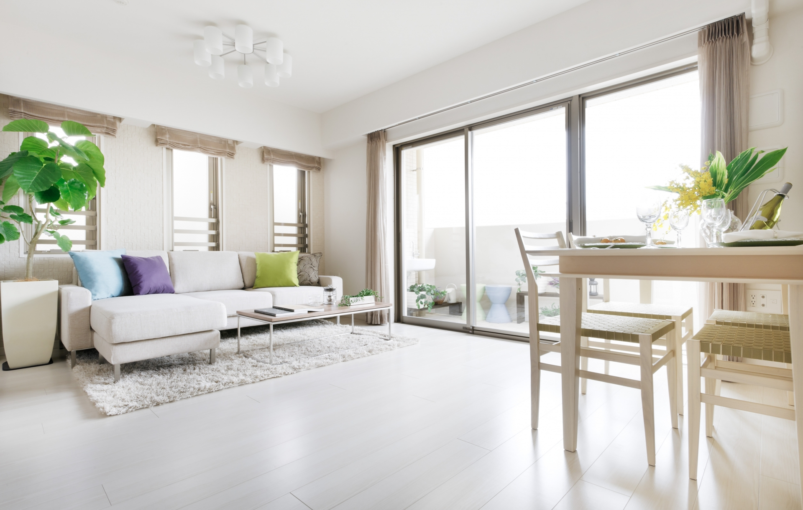
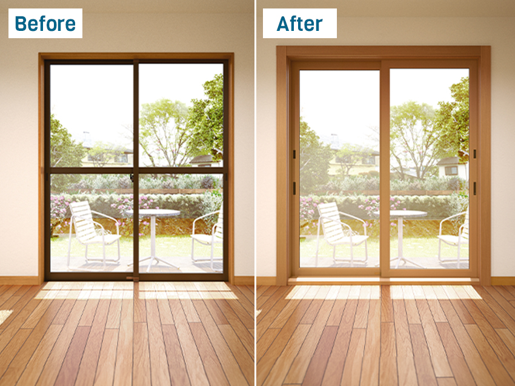
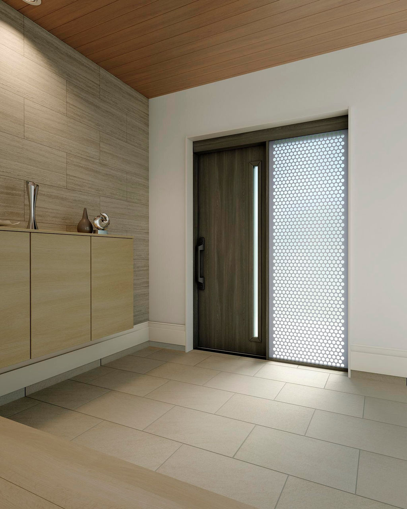
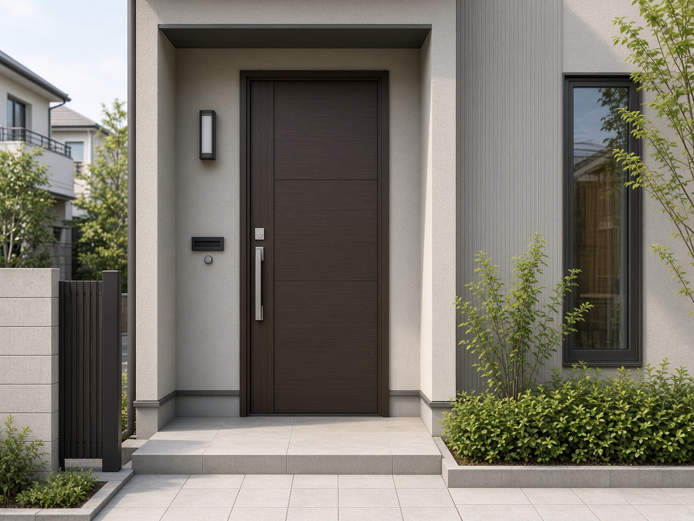
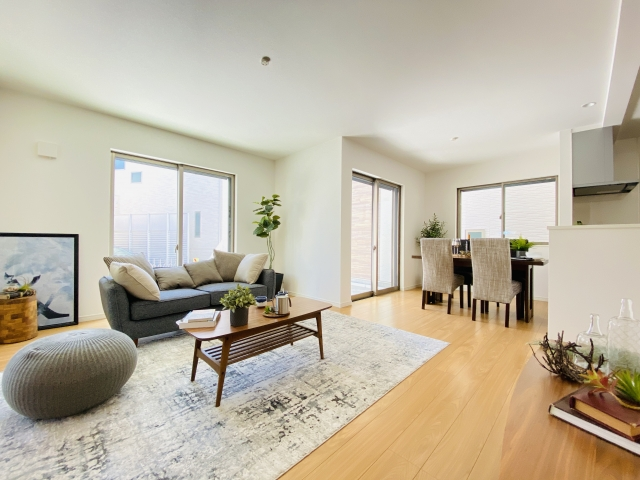
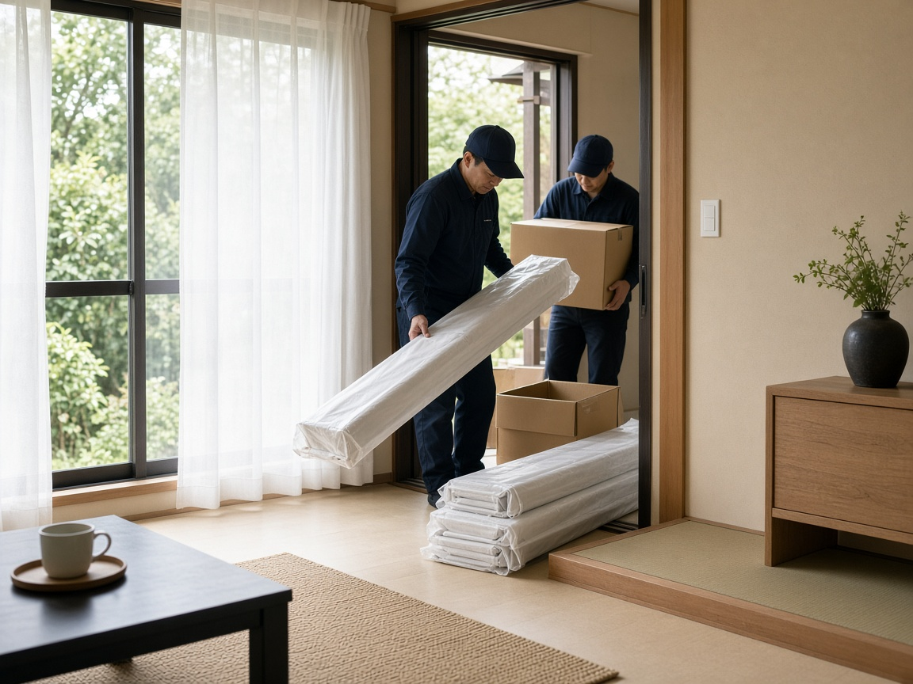
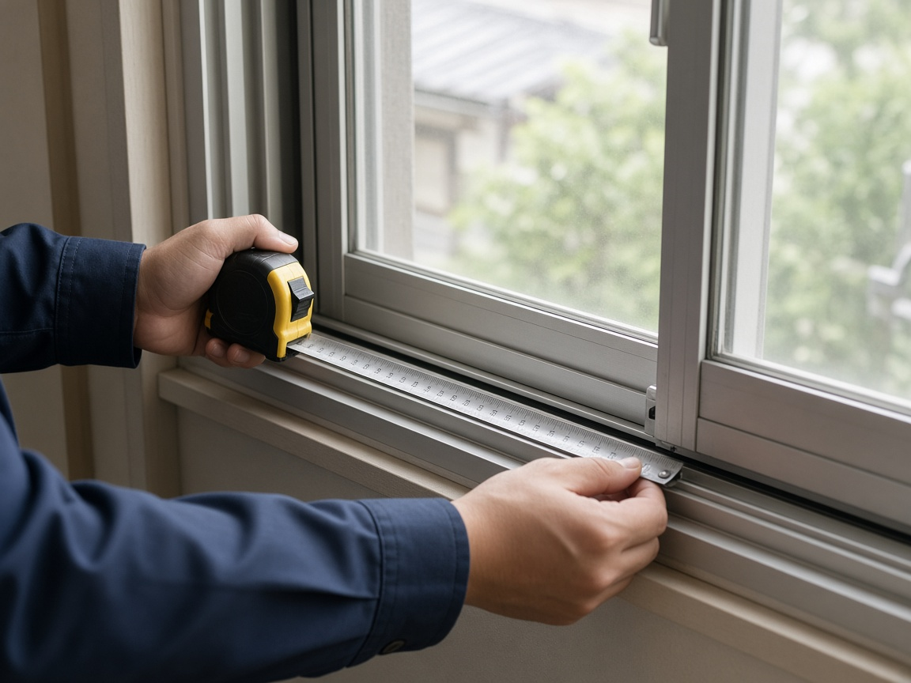
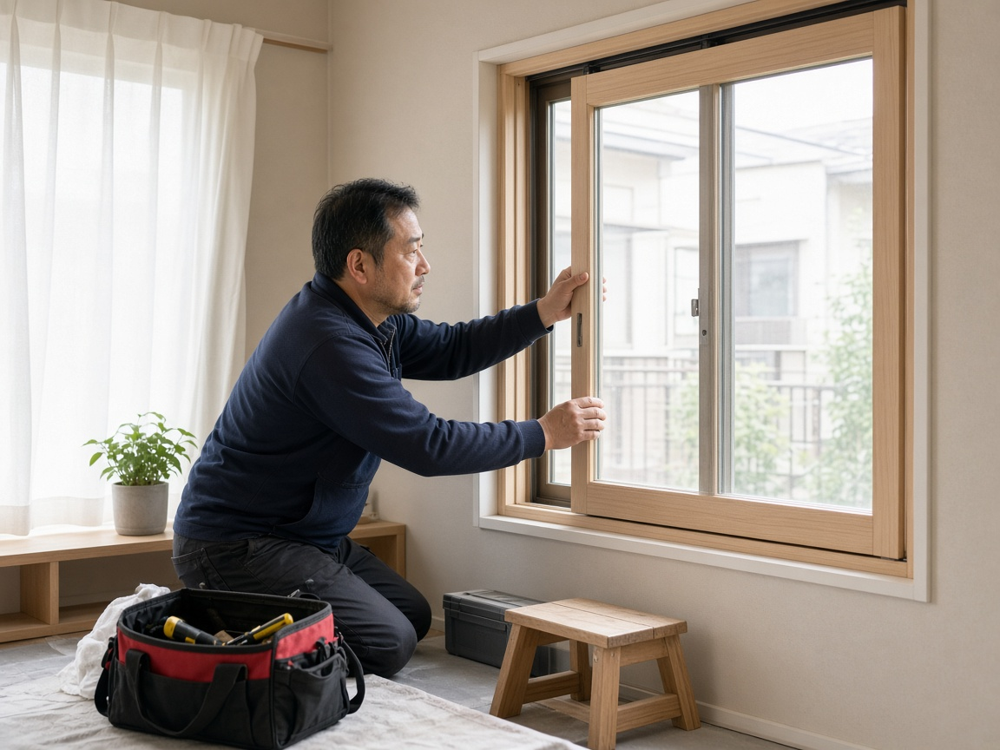
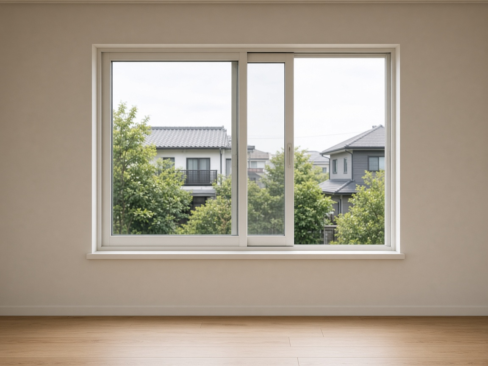

リクシル（LIXIL）
リクシルの窓（Before / After）
販売店：東海エコライフ

先進的窓リノベ2026 登録事業者
防犯、防音、結露・カビ、寒さ、暑さ。
その悩みの多くは「窓」と「玄関」から。光熱費の削減にもつながります。



家の熱は、その多くが窓などの開口部から出入りします。壁や床を工事するより、窓を変える方が、少ない費用で体感が大きく変わります。
大掛かりな全面リフォームではありません。
| 工法 | 内容 | 工期 | こんな方に |
|---|---|---|---|
| 内窓（インプラス等） | 既存窓の内側にもう一枚 | 1窓あたり最短1時間 | 手軽に始めたい／賃貸でも検討したい |
| カバー工法 | 既存枠を残して新しい窓に | 半日〜 | 既存窓の劣化が進んでいる |
| はつり工法 | 枠ごと交換 | 1日〜 | 本格的に刷新したい |
| 玄関ドア | カバー工法で交換 | 1日 | 玄関が寒い／ドアが古い |
リクシル・YKK AP・三協アルミの窓・玄関ドアを取り扱っています。
リクシル（LIXIL）
リクシルの窓（Before / After）
販売店：東海エコライフ
YKK AP
窓まわりのイメージ
販売店：東海エコライフ
三協アルミ

窓まわりのイメージ
販売店：東海エコライフ
家全体をやる必要はありません。気になる1部屋、1つの窓からでも始められます。
内窓なら、最短1時間ほどで工事が完了します。
まずは寝室だけ、リビングだけ——という方がほとんどです。
| 規模 | 費用の目安 |
|---|---|
| 2〜4窓だけ | 20万円〜50万円 |
| 5〜8窓 | 50万円〜90万円 |
| 8〜12窓 | 80万円〜150万円 |
| 家全体・10〜15窓前後 | 100万円〜200万円 |
| 外窓カバー・玄関ドアも含む | 150万円〜300万円超 |
工期は内容により1〜2日程度です。上記は目安で、正確な金額は現地調査でお見積りします。先進的窓リノベ2026事業の対象です。補助金額は窓のサイズ・性能・数により異なります（実質負担の断定はしません）。
窓・玄関のリフォームは、国の補助金の対象です。当社は 先進的窓リノベ2026事業の登録事業者です。東京都（クールネット東京）の制度とあわせて、使える補助金を診断から申請まで、すべて当社が代行します。
※補助金額は条件により異なります。同額の交付を保証するものではありません。
窓・玄関はまだ施工事例がないため、工程が伝わるようAI試作画像を仮掲載しています（施工事例ではありません）。
部材を室内へ

設置前に寸法と納まりを確認します

内窓なら1窓あたり最短1時間ほど

開閉・隙間・見た目

上記はAI試作・品質比較用です。メーカー提供の施工イメージ（LIXIL・YKK AP等）は利用可否の確認後に差し替えます。実際の施工が始まり次第、写真付きの事例に変更します。
玄関ドアも、1日で交換できます。断熱性の高いドアに替えると、玄関からの冷気が抑えられ、家全体の暖かさが変わります。先進的窓リノベ2026事業の対象です。
断熱性の高い窓・玄関ドアに替えると、冷暖房の効きが良くなり、光熱費は10〜15%ほど削減できるとされています（目安）。
さらに電気代を下げたい戸建ての方には、太陽光・蓄電池をあわせた「おうち丸ごと」のご提案もできます。
お名前・電話番号は不要です。3つの質問です。
現在は東京都内のご相談を受けております。
補助金が使えるかも、その場でお調べします。申請は当社が代行します。
20時頃までのお問い合わせを受け付けております。返信は1〜2日程度を目安にご連絡します。営業電話はいたしません。
LINEをお使いでない方：フォームで受け取る ／ お電話 042-652-9777
このページの第一のゴールは、無理な契約ではなく無料の現地調査です。まずはお住まいの状態を一緒に確認しましょう。
お悩みと窓の数
20時頃までのお問い合わせを受け付けています。返信は1〜2日程度を目安にご連絡します。
ここで終了されても構いません
ゴール
提携施工会社と当社が同行し、確定のお見積りをご提示します。ご希望の日程で調整します。
【来訪特典】現地調査を実施されたお客様には、JCB商品券3,000円分をその場でプレゼント。
※特典の件数上限・目標数は調整中です。確定次第、この欄に表示します。
お見積・ご契約・補助金申請・工事・アフターフォローは、現地調査のあとで詳しくご説明します。最初から契約前提ではありません。
工事は、当社が品質を確認した認定提携施工会社が担当します。補助金の申請とメーカー選定は当社が一括で行います。
診断後に営業電話はしません。訪問はご希望の場合のみです。
20時頃までのお問い合わせを受け付けております。返信は1〜2日程度を目安にご連絡します（混雑時は前後する場合があります）。
できます。
内窓なら可能な場合があります。原則オーナーの許可が必要です。
内窓は専有部のため可能なことが多いです。管理規約の確認が必要です。
必要です。1窓あたり短時間です。
すべて当社が代行します。
気になるお部屋の窓だけ、無料で診断します。補助金が使えるかも、その場でお調べします。
お悩みから無料診断太陽光・蓄電池もあわせて検討される方：これから付ける方／設置から10年以上経った方
お電話：042-652-9777（9:00〜20:00、土日祝も受付）
本番接続前のUI確認用です。送信はしません。
窓・玄関の写真は受領した製品イメージです。施工事例写真は実績ができてから追加します。